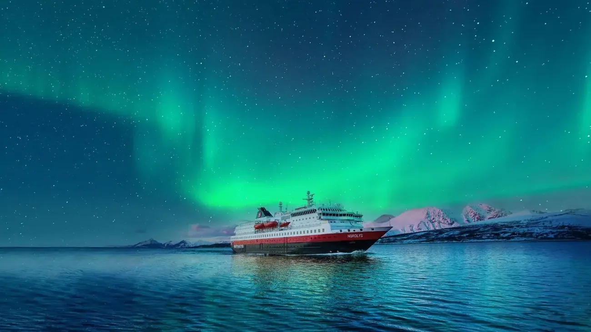

12 dager · 34 havner
Den originale kystruten
Bergen – Kirkenes – Bergen. Helpensjon, regelmessige avganger og havner langs hele kysten.
Fra 20 062 krDen berømte ruten vår har knyttet sammen lokalsamfunn siden 1893. I dag anløper vi 34 havner fra Bergen i sør til Kirkenes i nord – med regelmessige avganger hele året.
Velg mellom to unike konsepter for å oppleve de mange underverkene langs norskekysten.
Bergen – Kirkenes – Bergen. Helpensjon, regelmessige avganger og havner langs hele kysten.
Fra 20 062 kr
Bergen – Svalbard – Bergen. Arktisk all-inclusive-cruise med fjorder, dyreliv og midnattssol.
Fra 37 360 krOslo – Honningsvåg – Oslo. Lofoten og Nordkapp, all-inclusive.
Se prisBestill reisen i 2027 og sikre deg den garantert laveste prisen på reiser med Svalbardlinjen og Den originale kystruten.
For deg som drømmer om å oppleve det fantastiske nordlyset, gir vi et løfte som ingen andre kan matche.
Bestill en reise langs favorittstrekningen din – vi har regelmessige avganger og anløper 34 havner.
Ring +47 75 98 77 81 eller send en henvendelse, så hjelper vi deg å velge reise.